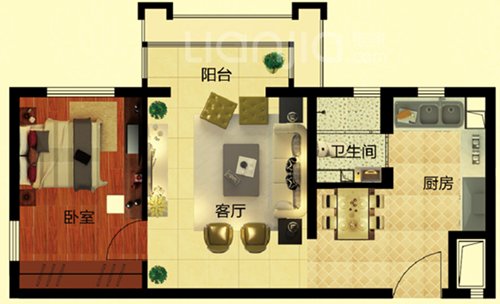

<ion-view view-title="请扫描户型" >
  <ion-content id = "selector-content">
    <button id="send_to_server">Send to Server</button>
    <button id="clear_log">Clear Log</button>
    <button id="init_camera">初始化相机</button>
    <button id="start_scan">开始扫描</button>
    <div id="log"></div>
    
    
    <canvas id="resize_image_canvas" width="800" height="1067" hidden></canvas>

    

  </ion-content>

</ion-view>


